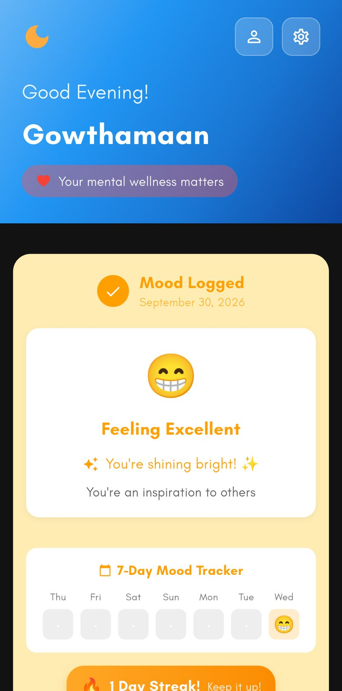
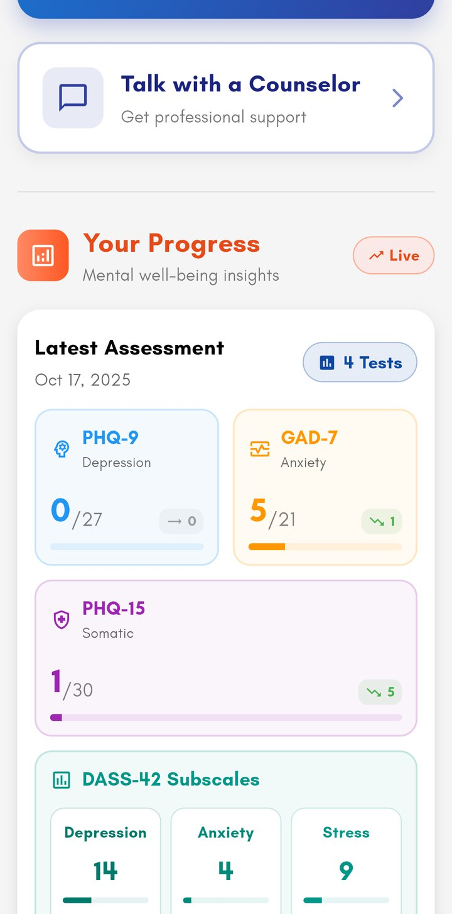
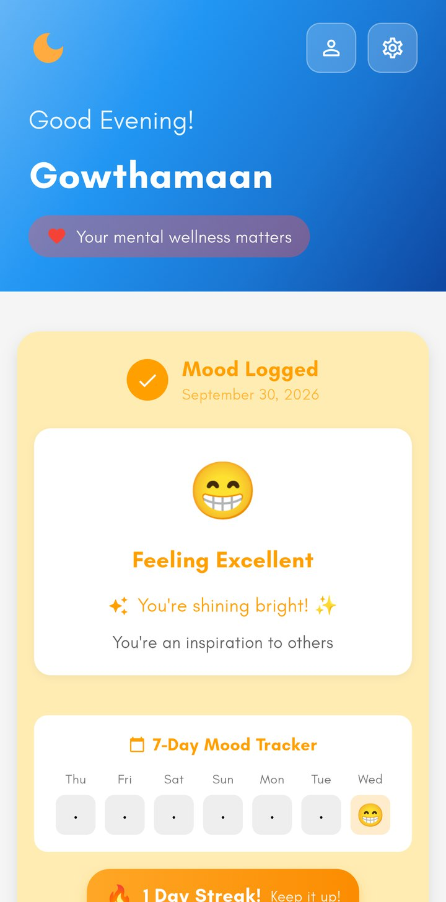
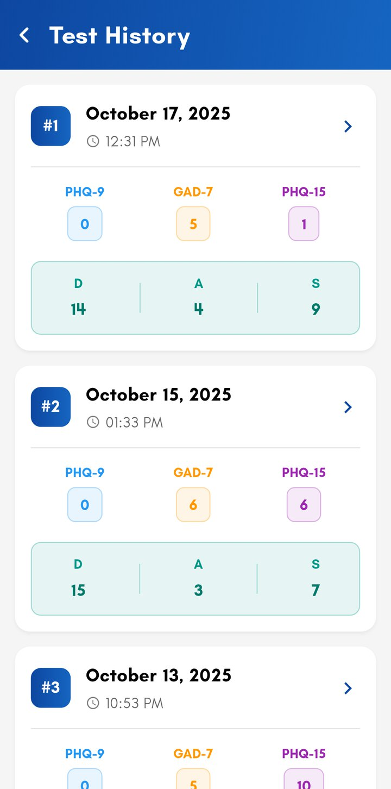
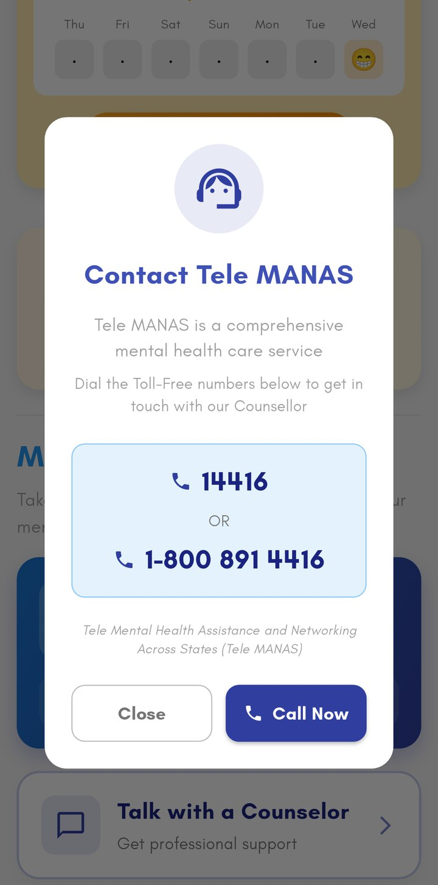
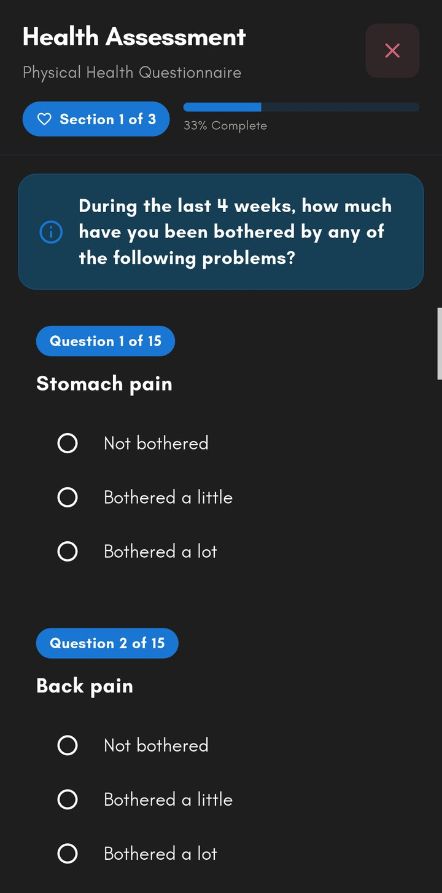

A free Android app that helps students check in with themselves every day, screen with validated questionnaires, and reach professional help in one tap.


Log today's mood in seconds. A 7-day tracker and a streak turn it into a gentle habit.

Take standard screening questionnaires and follow your scores over time, with plain-language explanations.

Tele-MANAS, India's free national tele-mental-health service, is built into the home screen. A low mood brings up a prompt to talk to someone.

| Instrument | Screens for | Items | Severity bands |
|---|---|---|---|
| PHQ-9last 2 weeks | Depression | 9 | MinimalMildModerateMod. severeSevere |
| GAD-7last 2 weeks | Anxiety | 7 | MinimalMildModerateSevere |
| PHQ-15last 4 weeks | Physical symptoms | 15 | MinimalLowMediumHigh |
| PHQ panic module | Panic symptoms | 4 | Follow-up questions |
| DASS-42optional | Depression, anxiety, stress | 42 | NormalMildModerateSevereExtremely severe |

Daily mood logs and self-screening help students notice changes before they become harder to manage.
Students can open their dated history of standard scores on their phone and walk through it with a counsellor, instead of recalling weeks from memory.
Tele-MANAS is always one tap away, and a low mood brings up a prompt to talk to someone.
Not a diagnostic tool, not a crisis service, and not a replacement for professional care.
Free for everyone. Download it directly from the official website.
Scan to download
gowthamaanp.github.io/peaceScan the code and tap “Download for Android”.
If Android asks, allow installs from your browser for this one time.
Verify your phone number, log today's mood, and take an assessment when ready.
Need to talk now? Call Tele-MANAS, free and toll-free
(also 1-800 891 4416).In an emergency, call 112.